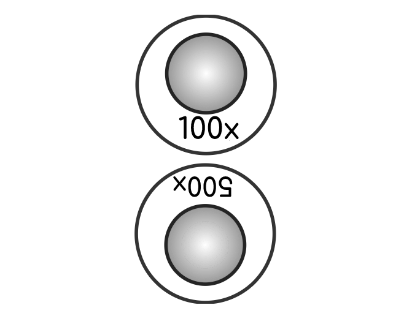
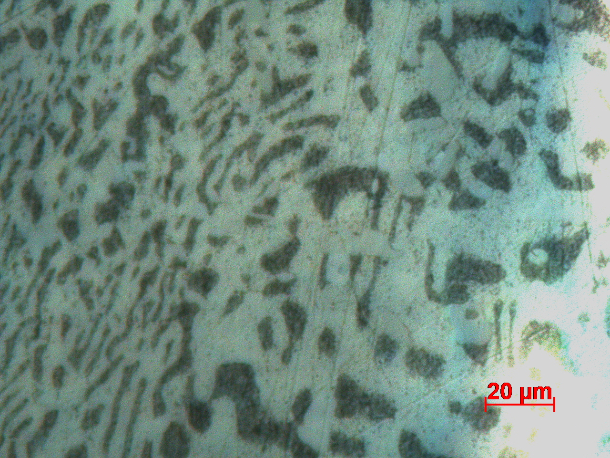
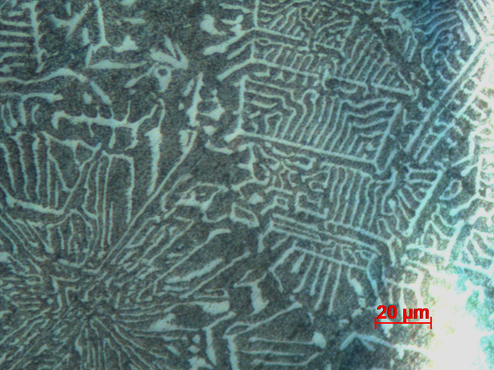

Optical microscopy of non ferrous samples
Objective
To obtain microstructures of non ferrous alloys like Solder alloy (Pb-Sn) and Brass.
Apparatus used:
Metallurgical microscope, polishing machine with abrasives, belt grinder, abrasive paper, flat glass plate with wooden framework, electric hot air blower, cotton, etchant (Nital 2% reagent & Acidified Ferric Chloride ), specimen.
Description Non-ferrous alloys : Non-ferrous metals or alloys are materials that are not iron-based like their ferrous counterparts. Non-ferrous metals are found in the Earth as chemical compounds. The most important non-ferrous metals happen to be oxides or sulfides.
Magnification on a microscope : This refers to the amount or degree of visual enlargement of an observed object. Magnification is measured by multiples, such as 50X, 100X and 500X, indicating that the object is enlarged to 50 times as big, 100 times as big or 500 times as big, respectively.


Select a sample to analyse its microstructure.
Brass is an alloy made from copper and zinc and a small percentage of other metals like iron, nickel, lead, tin, aluminum and antimony.
Obtain a flat surface on the specimen by belt grinding.


Support a polish paper of 1/0 fineness on a flat glass plate. Polish the specimens rubbing in forward direction only.
1/0 Polish paper Note:
Move to the next finer paper (2/0 and 3/0) once the scratches on the specimen are uniform. While changing from one paper to another, the specimen and your hands should be cleaned free from the abrasive of the previous paper, and the specimen turned through 90°, so that the scratches from the previous paper are at right angles to the scratches from the next paper.
Finish polishing the specimens on 4/0 abrasive paper, wash hands and specimens.
4/0 Polish paper
Do the fine polishing on the disc polishing unit.

Note:
Examine both specimens under the microscope and compare the structural features.

View the microstructures at different magnification levels and compare the microstructural features.
 
 PbSn:X2(Bearing metal)
PbSn:X3(lead base bearing metal)
Brass
PbSn:X2(Bearing metal)
PbSn:X3(lead base bearing metal)
Brass
Brass specimen is etched using Acidified Ferric Chloride.
In the etched microstructure, Alpha phase appears as a light region (Zn precipitate) and Beta phase appears as the Dark region.
X2 (Bearing metal) :
X2 specimen is etched using 2% Nital. In the etched microstructure, White cuboids of Sb-Sn, white needles of Cu6Sn5 and dark Pb-Sn-Sb eutectic matrix can be observed.
X3 (Lead base bearing metal) :
X3 specimen is etched using 2% Nital. In the etched microstructure, (shown under observation) : white cuboids of Sb-Sn, Black & white matrix of ternary eutectic Pb-Sn-Sb and dark globules of lead can be observed.